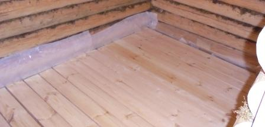
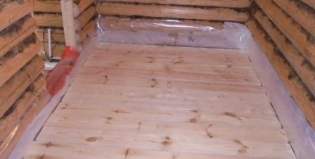
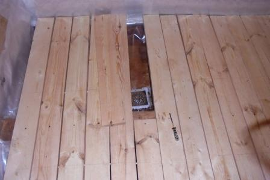

- Главная
- Cруб
- Выпиливание входной двери
- Двери
- Монтаж слива парной
- Основание первого уровня пола
- Обрешётка первого уровня пола
- Тепло и гидроизоляция в парной
- Основной пол в парной
- Окно в предбаннике
 Основной пол в парной.
Основной пол в парной.
Основной пол в парной.
Основной пол в парной.

Основной пол в парной опирается на пропилы в нижних бревнах и на полубрус.
По краям необходимо оставить зазор в 2см. Ведь, половые доски будут намокать и расширяться от этого.
Для исключения скрипа и неровности пола, крепим доски как саморезами к полубрусу, так и между собой на цилиндрические штыри диаметром 8мм.
Они продаются в мебельных магазинах. Отверстия под них в досках сверлятся на 1/3 длины штыря. Это создаёт зазор между половицами, для стекания воды.
Для обслуживания слива, распилили одну половицу пополам. Один край, где редко ходим не закрепили. Теперь можно его извлекать и чистить слив.
